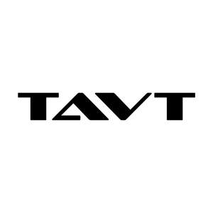

Trade Mark Journal No.2025/011 14 March 2025
UK00004169043 5 March 2025 (7,9,21)

- Class 7
- 3D printers; Dough kneading machines; Electric cleaning apparatus for household use; Electric fruit squeezers for household purposes; Electric juice extractors; Electric kitchen tools; Electric mixers for household purposes; Electric pasta makers for household purposes; Electric power tools; Electric vacuum cleaners; Electrically powered hand tools; Hand-held vacuum cleaners; Industrial robots; Machines for washing clothing [electric]; Packaging machines; Power-operated coffee grinders; Sweeping machines for use in swimming pools; Vacuum cleaners; Vacuum packaging machines; Washing machines for clothes.
- Class 9
- Batteries; Battery chargers; Battery chargers for laptop computers; Camera cases; Camera flashes; Camera lenses; Camera tripods; Chargers; Electric sockets; Lithium ion batteries; Mobile phone battery chargers; Mobile telephone batteries; Portable speakers; Power adapters; Power packs [batteries]; Solar panels; Solar-powered rechargeable batteries; USB cables; USB chargers; Wireless headphones.
- Class 21
- Bakeware; Baking utensils; Bins for household refuse; Brooms; Brushes; Combs; Cookery molds; Cosmetic utensils; Cups; Cutting boards; Dishes [household utensils]; Feeding vessels for pets; Heat insulated containers for drinks; Household gloves; Household or kitchen utensils; Indoor aquaria; Mop wringers; Pot holders; Storage jars; Tableware, cookware and containers.
Shenzhen Bifeng Technology Co., Ltd.
Representative: BSTOC Intellectual Property Co., Ltd